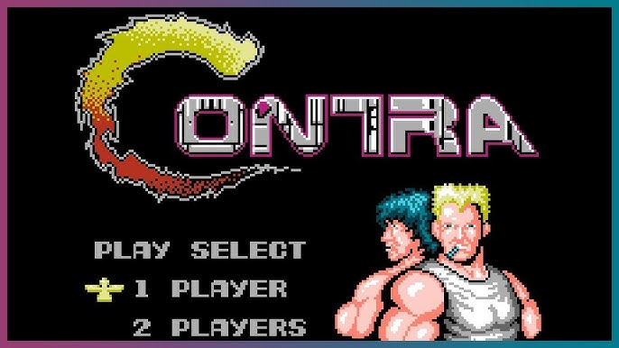

La Nintendo Entertainment System (NES) fue lanzada en Japón en 1983 como Famicom y en EE.UU. en 1985. Salvó la industria del videojuego tras la gran crisis de 1983 y vendió más de 60 millones de unidades en todo el mundo.
Con sus 8 bits de poder, su icónico control con cruceta y una biblioteca de juegos legendaria, la NES definió lo que significa ser un gamer.

El plataformas que lo cambió todo. Mario, hongos, castillos y la princesa Peach. Un clásico absoluto de 1985.

Explora Hyrule, recoge las piezas del Triforce y salva a la Princesa Zelda. Aventura de mundo abierto antes de que existiera el concepto.

El shooter más difícil de la NES. Dos jugadores, armas devastadoras y el código Konami más famoso de la historia.